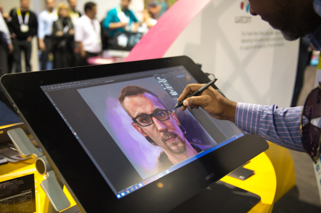
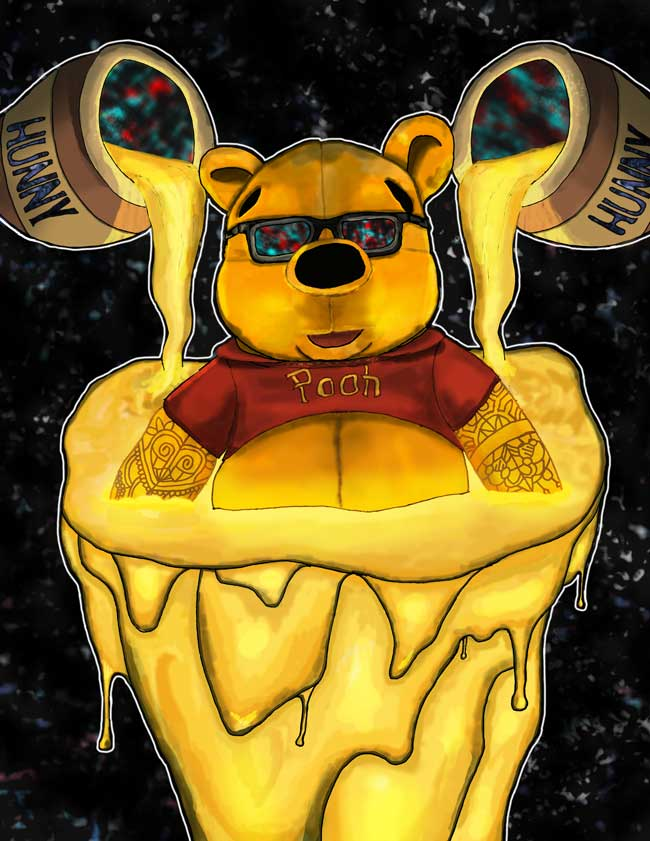

PHOTOSHOP
Digital Art Using the Wacom Cintiq

Since I was young, I’ve had a cognitive habit of imagining abstractions in my environment. Among the most simplistic examples would be to look at a table and then imagine a red apple sitting on top of it. At first glance, this exercise of the imagination may seem arbitrary. Nevertheless, over time it has developed into forming full portraits.
Thus, during my junior year in high school, fueled by the desire to be able to project whatever was in my head onto paper, I set out teach myself digital art.
Winnie the Pooh
Tools: Adobe Photoshop, Wacom Cintiq
Bicycle Day
Tools: Adobe Photoshop, Wacom Cintiq

My Voice
My Voice
Over the past couple of years, my artistic voice has explored many avenues: from digital painting using photoshop to full-scaled murals to wooden sculptures. Aside from a means of direct artistic expression, I've found my style to reflect the abstract nature of MC Escher and the spacious and dreamlike qualities of Salvador Dali.
Through learning HTML, CSS, and JS, I've discovered the constraints of web development to provoke the same flow states I fall into when working on digital art projects. I'm looking forward to growing as a digital artist as well as defining my architectural voice on the internet.